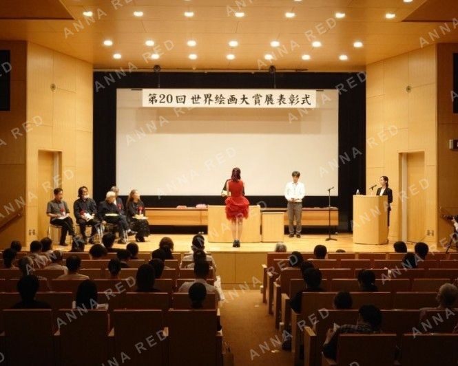
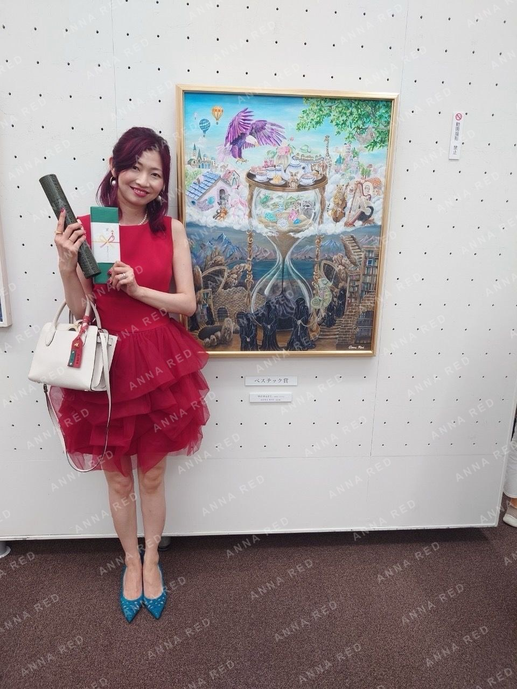

I received the Bestech Award, a sponsor prize, at the 20th World Painting Grand Prize Exhibition 2024, an open-call exhibition organized by the well-known art supply store Seikaido.
To be selected from 1,050 submitted works is a great honor. I would like to sincerely thank the judges and everyone involved.
The award-winning piece, Until That Time Comes, tells the story of a chameleon who continues living without losing hope for the future, even while being deprived of freedom in a harsh environment.
Although the work takes the form of a story, there were parts of it that overlapped with life itself. Enduring difficult stretches of time, waiting with strength for the right moment and for a chance, and one day moving toward a freer and happier future. Those feelings are what I placed into this painting.
I would be happy if this work could offer even a small sense of hope.

Award-winning Work
Until That Time Comes
Size: F30 (910 x 727mm)
Material: Canvas Acrylic
Exhibition Information
20th World Painting Grand Prize Exhibition
July 3 (Wed) - July 8 (Mon), 2024
Tokyo Metropolitan Art Museum, Ueno, Tokyo
Approximately 150 selected works on display
The award ceremony also gave me the chance to meet other artists who are sincerely facing their work, and building new connections through art became one of the great joys of this experience.
I hope to continue creating while treasuring the everyday scenes and stories that move me.